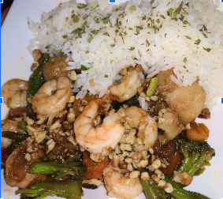

STICKY HONEY GARLIC BUTTER SHRIMP

Ingredients
- ½ cup Honey
- ⅓ cup Soy Sauce
- 3 cloves Garlic minced
- 1 small Lemon Juice from lemon
- 1 pound Large Shrimp peeled and deveined
- 2 Tablespoons Butter
- 1 teaspoon of minced or powdered ginger
- 1 bag of mixed veggies (steamed)
- Salt and pepper to taste
- Handful of chopped walnuts for garnish
Instructions
- In a small bowl whisk honey, soy sauce, garlic, ginger and lemon.
Add half of the sauce to the shrimp in a plastic bag and let marinate for 30 minutes in fridge.
- Steam veggies (any mixed veggies you want) separately and strain.
- In a medium sized skillet add the butter. Add the shrimp and save marinade. Season with salt and pepper.
- Turn the heat to medium high. Cook until the shrimp turns pink about 2 minutes each